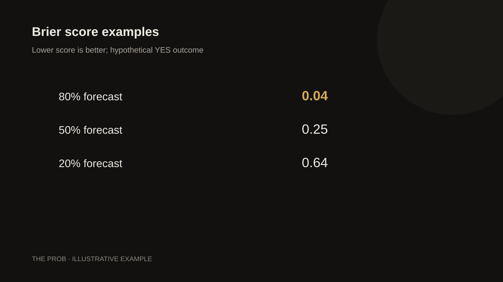
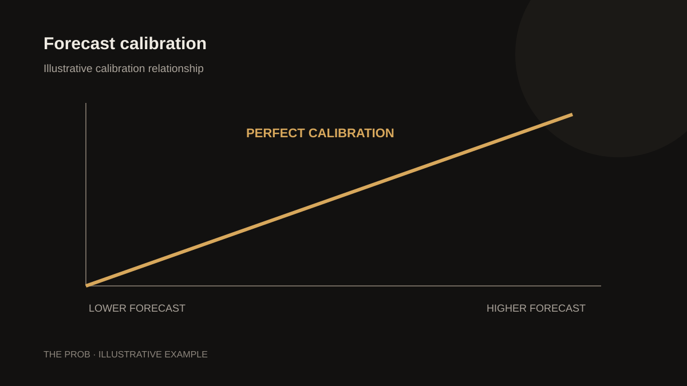
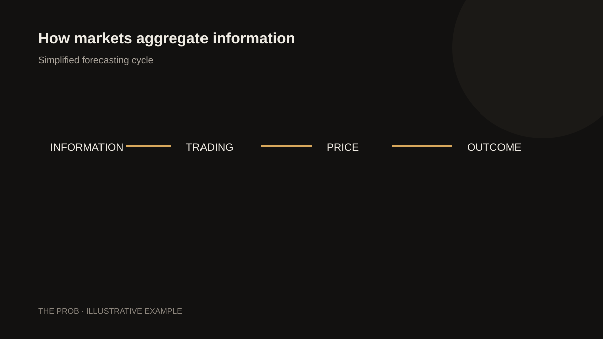

The question is not "do prediction markets win?" It's "when do they win, and why?" Here's what three decades of research actually shows.
A prediction market assigns an event 70% odds. The event happens. Was the market accurate? You can't answer that from a single outcome.
Accuracy requires a large sample. If a system assigns 70% to 1,000 comparable events, roughly 700 should occur for the system to be well-calibrated. One win, one loss, one election, one IPO — none of that settles it.
This is the concept of calibration. And it's the right lens for evaluating these markets. For background on what prediction market prices represent before diving into accuracy, see how to read prediction market odds.
The Brier score is the squared difference between the forecast probability and the actual outcome, where YES = 1 and NO = 0. Lower is better.
| Forecast | Outcome | Brier score |
|---|---|---|
| 80% | YES (event happened) | 0.04 (good) |
| 80% | NO (event didn't happen) | 0.64 (bad) |
| 50% | YES | 0.25 (coin-flip hedge) |
A single Brier score means little. Averaged across hundreds of forecasts, it tells you whether a system is overconfident, underconfident, or well-calibrated. The Brier score penalizes confident wrong forecasts heavily, which is exactly the right incentive.

A well-calibrated system assigns 90% to events that happen roughly 90% of the time. 60% forecasts come true around 60% of the time. The numbers match the frequencies.
Overconfidence looks like a system that assigns 90% to events that resolve YES only 65% of the time. It wins a lot, but it's too confident in weak signals.

The Iowa Electronic Markets (IEM), launched in 1988 at the University of Iowa, became the foundational research environment for election-based prediction markets. Researchers could observe how prices evolved over months and compare them against eventual results.
Berg, Nelson, and Rietz compared IEM forecasts with national polls across US presidential elections from 1988 through 2004. Their analysis found that market forecasts performed competitively with polls, and outperformed them over longer forecasting horizons in the elections studied. That's a meaningful finding for a specific sample. It doesn't prove markets always beat polls in every context.
The broader literature also documents biases: longshot effects (markets overprice unlikely events), herding behavior, and information leakage. The right conclusion is not that markets are infallible. It's that they provide a measurable signal worth taking seriously.

Real money is on the line. When people risk their own capital, they have a financial incentive to be right, not just opinionated. Incentives to identify mispriced markets attract informed traders. Those traders update prices as new information arrives.
Markets also express uncertainty as a probability rather than a vague label. "Likely" tells you nothing. 67% tells you something specific, even if imperfect.
None of those advantages are automatic. Participants can be uninformed, herding can override individual insight, and thin markets can produce noisy prices. See the liquidity section for why market depth matters: prediction market liquidity.
Thin markets are easy to push around. Contract language can be ambiguous. Participants may have incentives beyond accurate forecasting. Information can be unevenly distributed or simply wrong. And a market can only price the question it actually lists.
Prediction markets have been confidently wrong before. The lesson is not to dismiss them. It's to read them alongside their liquidity, volume, and cross-platform context.
A market six months before an event is a different signal than the same market three hours before. As the event approaches, more information becomes available and prices typically sharpen. Early forecasts carry more uncertainty, which is exactly what a wide probability range shows.
The same logic applies to comparing markets with polls. For a full look at how that comparison plays out, read prediction markets vs. polls.